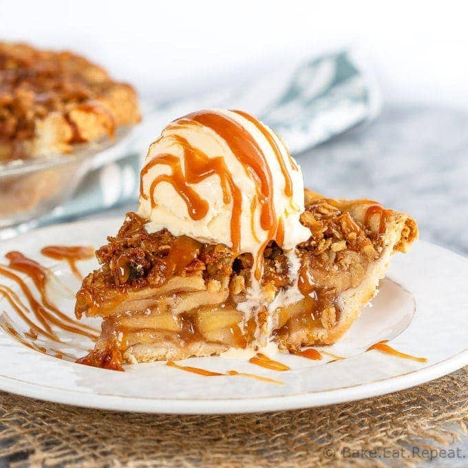

Caramel Apple Crisp

The 28th best caramel apple crisp
This was another recipe by my late grandma, we used to have it every time we visited, I didn't inherit this recipe though, it's my sister's but I stole the recipe slip
Ingredients
- Half a cup of caramel topping
- Half a teaspoon of ground cinnamon
- Six large baking apples, peeled and cut into half inch slices
- Two thirds of a cup of all-purpose flour
- Half a cup of packed brown sugar
- Half a cup of cold butter, cut into small pieces
- Two thirds of a cup of quick cooking oats
Directions
- Preheat an oven to 375 degrees F
- Stir the caramel topping and cinnamon together in a bowl. Toss in the apples, mixing until evenly coated. Spread apple mixture into an 8-inch square baking dish.
- Mix flour and brown sugar into the same bowl used to mix the apples. Cut in the butter with a knife or pastry blender until the mixture resembles coarse crumbs. Stir in the oats, then crumble over the apples.
- Bake in the preheated oven until the apples are tender and the topping is golden brown, 45 to 50 minutes.